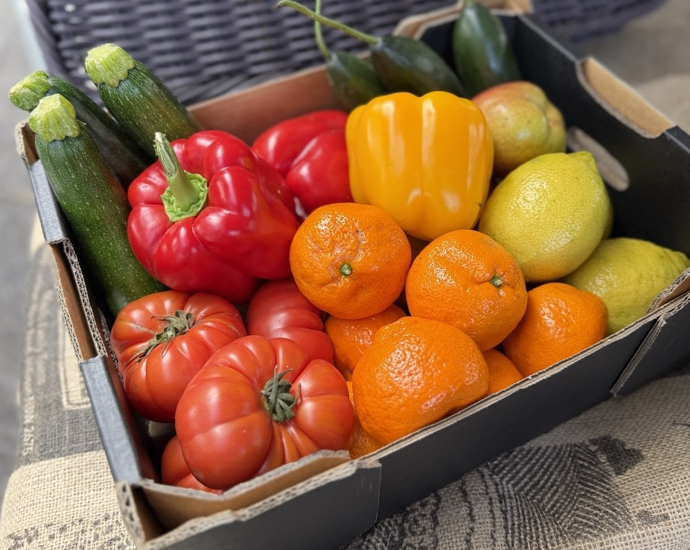
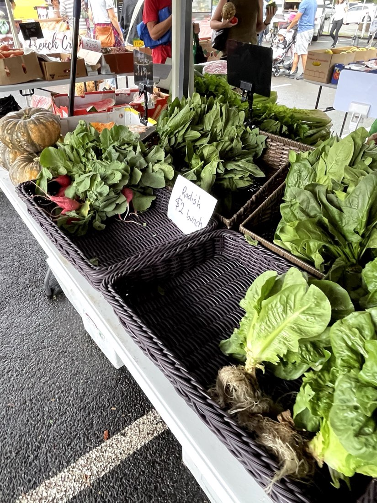

Shire Farmers' Market | Sutherland · Every Saturday
Fresh produce,
straight to Sutherland.
Apollo Fresh Produce brings fresh fruit and vegetables to the Shire Farmers' Market in Sutherland every Saturday morning. Come say hello and fill your basket.

Good produce, picked with care.
We're a small produce stall focused on quality over quantity — fresh fruit and vegetables, hand-picked each week and sold with a smile every Saturday at the Shire Farmers' Market in Sutherland.
We work with trusted wholesalers and growers to bring a wide range of quality produce to the stall, and we're picky about what makes the cut.
- Wide variety
Vegetables, fruit, herbs and more — something for the whole week's cooking.
- Local & friendly
Same stall, same faces, every Saturday. Come by and say g'day.
- Quality first
We'd rather sell out early than sell produce we're not proud of.

Find us this Saturday
- Market
- Shire Farmers' Market
- Day
- Every Saturday
- Time
- 8:00am – 1:00pm
- Location
- 131 Flora St, Sutherland NSW 2232 (behind Sutherland Entertainment Centre, 100m from Sutherland Station)
Look for the Apollo Fresh Produce stall — we're there rain or shine.
Get directionsWhat we bring
A snapshot of what you'll typically find at the stall — always changing with the season.
Seasonal Vegetables
Tomatoes, leafy greens, root veg and more, picked at their best.
Fresh Fruit
Whatever's in season — from stone fruit in summer to citrus in winter.
Herbs & Greens
Fresh bunches to finish off any meal.
Berries & Tropical
Berries, pineapples, melons and more when they're in season.
At the stall
A few snapshots from recent Saturdays at the market.